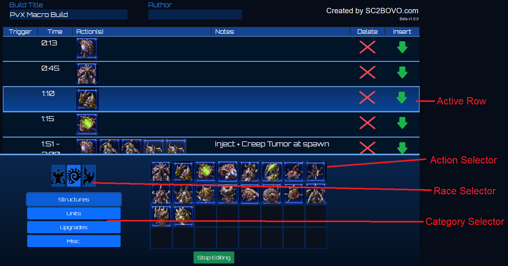

To create a Visual Build Order (VBO), select "BOVO" from the top menu. Begin by giving your Build Order a name and optionally include your name.
The menu on the bottom half of your screen is called the Action Selector. Use the buttons on the left to select your race and category of action. You use this to fill in the "Action(s)" column. Other columns can be edited by clicking in the cell and typing.
Once you have multiple steps, you'll notice that one row of your build order is lit up. This is the actively selected row and any actions selected in the Action Selector will be added to this row.
To delete an action, left click it within the Build Order.
Once you are done with your build, select "Stop Editing" and take a screenshot of your build.
